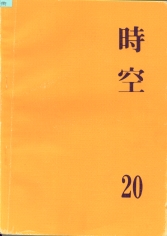

《時空》第二十期
目錄
編輯室語
1
學會的話
廖思善
3
物理學會章程
6
系內討論會記錄
李娟瑩、黃小玲
8
對課程教材之建議
而 為
13
系內動態
編輯部
17
物理系的將來（新課程）
過河卒子
19
也是舊調（天文組）
陳政維
22
應用電子學實驗
歐政隆
24
科學趣聞
編輯室
27
通訊錄
編輯室
30

出版者：台大物理學會
印刷廠：梅枝圖書印刷打字文具有限公司
出版日期：民國六十六年六月十日
台大訓導處登記第209號